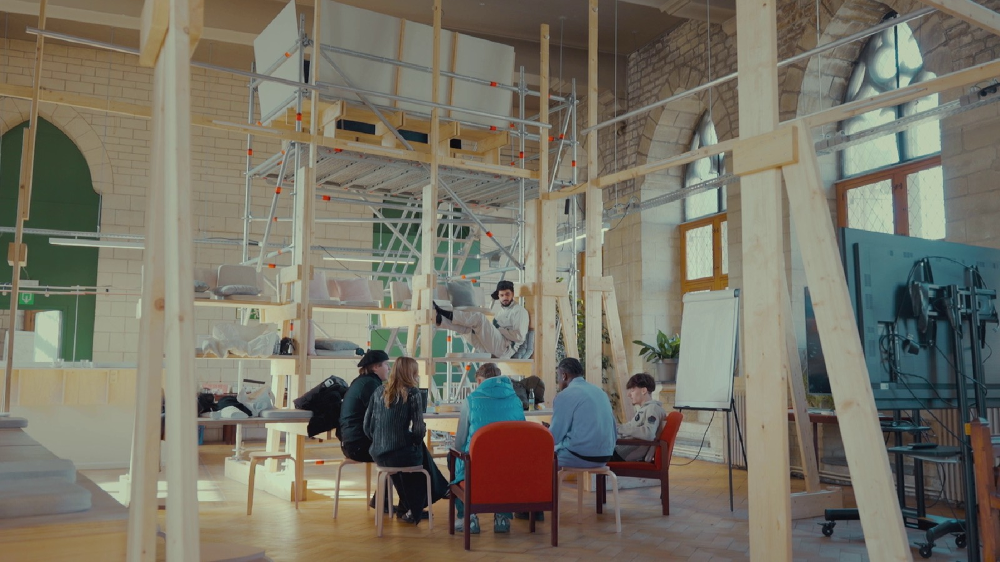

Future Fusion

Wat verwachten jongeren van hun toekomst? En welke plaats krijgen hun talenten en ambities in een snel veranderende samenleving? In het historische stadhuis van Leuven krijgen tien jongeren de sleutels en een eigen budget om die vragen zelf te onderzoeken. Zeven maanden lang wordt het gebouw hun uitvalsbasis voor het Future Generations Lab, een experiment waarin ze nadenken over de toekomst van werk en de mogelijkheden om hun eigen ideeën te realiseren.
Future Fusion volgt verschillende jongeren tijdens de voorbereiding van een groots publieksevenement. Een jonge modeontwerper probeert zijn weg te vinden na een afwijzing door de modeschool. Andere deelnemers ontwerpen tijdelijke installaties met hergebruikte materialen of organiseren een hiphopfestival dat mensen moet samenbrengen. Achter hun creatieve plannen schuilen persoonlijke verhalen over prestatiedruk, moeilijke levensomstandigheden, maatschappelijke verwachtingen en de zoektocht naar een plek waar hun talenten tot hun recht komen.
Op 16 maart 2024 nemen de jongeren het Leuvense stadhuis volledig over. Met een modeshow, tentoonstellingen, muziek en architecturale installaties tonen ze waartoe ze samen in staat zijn. De documentaire brengt niet alleen hun enthousiasme en ondernemingszin in beeld, maar ook de twijfels en obstakels die ze onderweg tegenkomen. Zo ontstaat een portret van een generatie die niet wil wachten tot anderen haar toekomst bepalen, maar zelf op zoek gaat naar nieuwe manieren van werken, leren en samenleven.
- Michael Lombarts
- regie, camera, montage
- Bertrand Lafontaine
- regie en eindredactie
- Tim Buelens
- camera
- Evenement stadhuis Leuven · 16.03.2024
- Première Cinema ZED Leuven · 27.06.2024